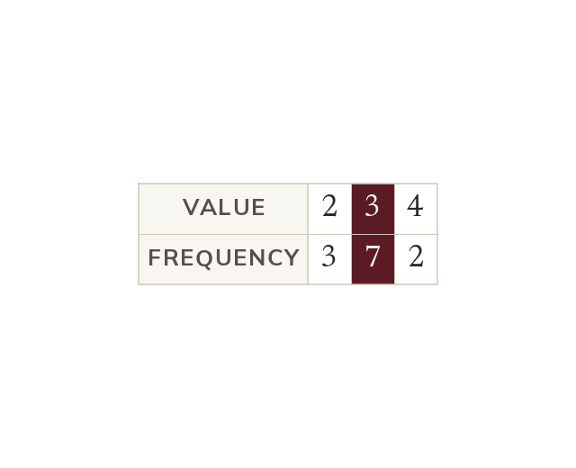

Reading averages from a diagram
A diagram holds the same information as a list. In a frequency table, the mode has the highest frequency.
A diagram holds the same information as a list, so the mode, median, mean and range can all be found directly from it without writing the list out first. In a frequency table, the mode is the value with the highest frequency - read straight off, no counting needed.